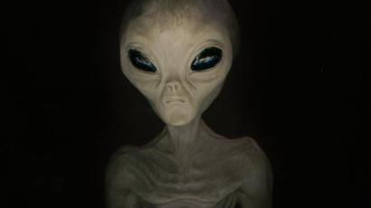
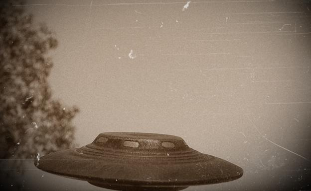

Toca las imagenes para ver más

El acrónimo OVNI se refiere genéricamente a objetos voladores que no han sido identificados y no está vinculado necesariamente a la vida extraterrestre.
A finales de 2019, el pentagono colgó 3 videos de OVNIS, en los que admitia que era cierto, que eran videos reales y que existian.
Se dice que en todos estos años de vida nos han llegado a visitar unas 60 especies de alienigenas distintos, pero no he podido encontrar la información suficiente que mantenga con firmeza este hecho.
Tambien se ha publicado varios informes de razas de alienigenas que conviven con nosotros, las cuales pondre a continuación su nombre:
- Los Sirianos
- Los Grises Cortos
- Los Grises Altos
- Los Reptiles Nativos
- Los Alfa Draconianos
- Los Anunaki
Pulsa sobre las imagenes, para ver imagenes reales enviadas por personas.
- Los Sirianos
- Los Grises Cortos
- Los Grises Altos
- Los Reptiles Nativos
- Los Alfa Draconianos
- Los Anunaki